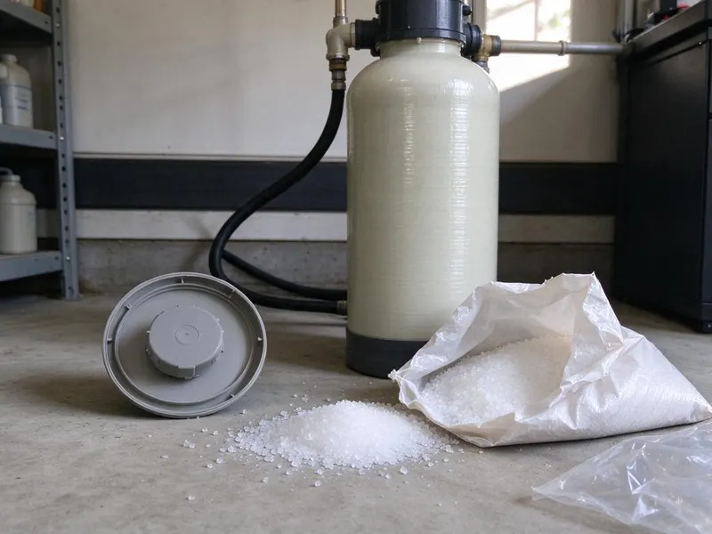
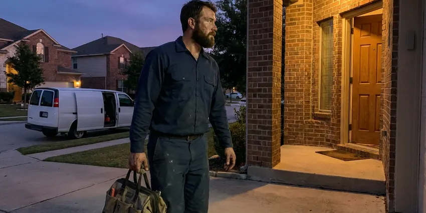

Tankless Water Heater Maintenance in Carrollton, TX
For expert tankless water heater maintenance in Carrollton, TX, look no further than DFJ Plumbing. We keep your on-demand hot water system in top condition.
- Fast, Reliable Service
- Expert, Certified Technicians
- Transparent Pricing
- Satisfaction Guaranteed
Get Professional Tankless Water Heater Maintenance in Carrollton, TX.
Our skilled technicians are ready to provide the thorough maintenance your system needs.
Expert Tankless Water Heater Maintenance in Carrollton, TX
DFJ Plumbing specializes in comprehensive tankless water heater maintenance throughout Carrollton, TX. Our services are designed to maximize your unit's efficiency and lifespan, preventing common issues caused by hard water or sediment buildup, which are prevalent in many Texas communities. We ensure your on-demand hot water system is always ready when you need it.
Our expertise includes:
- Descale heat exchangers and flush lines.
- Inspect gas lines, vents, and ignitors.
- Check water flow sensors and pressure relief valves.

Additional Plumbing Maintenance Services in Carrollton, TX
Our maintenance and specialty plumbing services in Carrollton, TX protect your home year-round and extend the life of every system.


Customers
Why Choose DFJ Plumbing for Tankless Water Heater Maintenance in Carrollton, TX?
Ignoring regular maintenance can lead to reduced efficiency, higher energy bills, and even premature failure of your tankless water heater. We help you avoid costly repairs and ensure your unit performs optimally.
- Extended Lifespan, Regular flushing and descaling prevent corrosion and wear, significantly extending your unit's operational life.
- Energy Efficiency, Clean heat exchangers and properly calibrated components ensure your unit uses less energy to heat water.
- Reliable Hot Water, Preventative checks address potential issues before they cause unexpected cold showers or breakdowns.
Citywide Coverage
DFJ Plumbing proudly serves every neighborhood and surrounding community in Carrollton. Whether you're in the heart of downtown or on the outskirts, our team is ready to provide prompt and reliable tankless water heater maintenance services. We understand the diverse plumbing needs across our service areas and are equipped to handle them all.
Experienced Team
Our team of plumbers at DFJ Plumbing is rigorously trained and certified specifically in tankless water heater technologies. With years of hands-on experience in Texas's unique plumbing challenges, they are experts at diagnosing and resolving any maintenance issue, from complex flow sensor problems to heat exchanger descaling.
Safety-First Approach
Safety is paramount at DFJ Plumbing, especially when dealing with gas-fired appliances like tankless water heaters. Our maintenance procedures strictly adhere to all local and state plumbing codes, including proper gas line inspection and venting verification. We ensure your system is not only efficient but also safe for your family and home in Carrollton.
Trusted Certified Carrollton Plumbing Services Professionals
At DFJ Plumbing, we take pride in providing licensed, certified plumbing services throughout Carrollton, TX. Backed by recognized industry credentials, our experienced plumbers combine technical skill with genuine customer care. Whether it is repair, installation, or maintenance, we follow strict safety and quality standards to deliver lasting results you can trust.
Call Us Now PHCC Plumbing Contractor Recognition
PHCC Plumbing Contractor Recognition Better Business Bureau (BBB) Accreditation
Better Business Bureau (BBB) Accreditation Angi Certified Pro
Angi Certified Pro ISO 9001 Quality Management Certification
ISO 9001 Quality Management CertificationPremier Tankless Water Heater Maintenance Services in Carrollton, TX
Residential Tankless Water Heater Flushing in Carrollton
Hard water, common across many parts of Texas, can lead to significant mineral buildup in tankless water heaters. Our residential flushing service in Carrollton involves circulating a descaling solution through your unit's heat exchanger to remove calcium and magnesium deposits. This process restores efficiency, prevents overheating, and extends the life of your appliance, ensuring continuous hot water for your family without interruption.

Commercial Tankless System Maintenance in Carrollton, TX
Businesses in Carrollton, TX rely on consistent hot water for their operations, making regular tankless water heater maintenance essential. We service commercial-grade tankless units, performing thorough inspections of all components, checking for optimal gas pressure, and cleaning filters and vents. Our preventative approach minimizes downtime and ensures your business has reliable hot water for restrooms, kitchens, or industrial processes.
Rinnai Tankless Water Heater Service in Carrollton
DFJ Plumbing specializes in the maintenance of Rinnai tankless water heaters, a popular brand known for its efficiency. Our technicians in Carrollton are trained on Rinnai's specific diagnostic codes and service protocols. We address common Rinnai issues such as error code 11 (ignition failure) or flow sensor malfunctions, ensuring your unit operates at peak performance according to manufacturer specifications and local codes.
Noritz Tankless Water Heater Tune-Ups in Carrollton, TX
Noritz tankless water heaters are robust systems, but they still require annual tune-ups to maintain their performance, especially in the variable climate of Carrollton, TX. Our maintenance includes checking the unit's exhaust system, ensuring proper combustion air intake, and verifying the integrity of the heat exchanger. We also calibrate the temperature and flow settings to ensure maximum efficiency and comfort, preventing common issues like cold water sandwiches.
Annual Tankless Water Heater Inspection in Carrollton
An annual inspection of your tankless water heater in Carrollton is a proactive measure against costly repairs. Our comprehensive check includes examining the gas line connections for leaks, testing the pressure relief valve, inspecting the igniter, and cleaning the air intake filter. We look for any signs of wear or potential failure, providing recommendations to keep your system running smoothly and efficiently all year long, even during Texas's hot summers or occasional freezes.
Emergency Tankless Water Heater Service in Carrollton, TX
Even with regular maintenance, unforeseen issues can arise with tankless water heaters. If you experience a sudden loss of hot water, error codes, or unusual noises from your unit in Carrollton, TX, DFJ Plumbing offers emergency services. We prioritize rapid response to diagnose and resolve critical problems, often related to clogged heat exchangers or faulty sensors, restoring your hot water supply quickly and safely.
Tankless Water Heater Venting System Check in Carrollton
Proper ventilation is critical for the safe operation of gas-fired tankless water heaters. Our maintenance service in Carrollton includes a thorough inspection of the venting system for blockages, proper slope, and secure connections. We ensure that exhaust gases are safely directed outside and that no carbon monoxide leaks are present, which is vital for the health and safety of your household.

Preventative Maintenance for All Tankless Brands in Carrollton, TX
DFJ Plumbing provides preventative maintenance for all major tankless water heater brands, including Navien, Bosch, and State, across Carrollton, TX. Our technicians are cross-trained to handle the unique requirements of each manufacturer. We perform descaling, filter cleaning, and component checks tailored to your specific model, ensuring long-term reliability and adherence to manufacturer warranties, regardless of the brand.
Tankless Water Heater Maintenance Near Me in Carrollton, TX
Looking for reliable tankless water heater maintenance near me in Carrollton, TX? DFJ Plumbing has local plumbers ready to serve your area. Our strategically located teams ensure a quick response time, bringing expert service right to your doorstep, preventing minor issues from escalating into major problems.
When your tankless unit needs a professional touch, you want a trusted service provider nearby. DFJ Plumbing is your local choice for tankless water heater maintenance in Carrollton, TX, offering prompt, efficient service with a focus on customer satisfaction. Don't search endlessly, call us for immediate assistance.
DFJ Plumbing at a Glance
- Fully licensed plumbing team covering Carrollton, TX
- Same-day appointments and 24/7 emergency response
- Clear written estimates, no hidden fees
- 4.9-star rated by 812+ Texas customers
Carrollton Map
Carrollton Information
- Population
- 132,918
- Area codes
- 972/469/214
- Service area
- Carrollton and communities within 40 miles
- Nearby
- Lewisville, Plano, Irving, Grapevine
Regular tankless water heater maintenance is especially vital for homes in Carrollton, TX, where hard water conditions can quickly lead to mineral buildup and reduced efficiency.
Expert Services
Trust our professionals for reliable DFJ Plumbing solutions in Carrollton, TX.
Our Specialized Plumbing Services in Carrollton, TX
At DFJ Plumbing, we provide a complete range of plumbing services across Carrollton, TX. From leak detection to full system installations, our team ensures fast, precise, and affordable service for both residential and commercial properties. Explore our core services below:


How Our Tankless Water Heater Maintenance Process Works in Carrollton, TX
Our comprehensive maintenance process guarantees your tankless water heater in Carrollton, TX receives the best care, from initial inspection to final check.
Request a Quote
Contact us at (737) 405-5978 or through our website to schedule your tankless water heater maintenance. Our friendly staff will gather necessary details and provide a transparent quote.
On-Site Inspection
A certified technician arrives at your Carrollton home to conduct a thorough inspection of your tankless unit, checking for any visible issues, leaks, or error codes.
Descaling & Flushing
We perform a crucial descaling and flushing of the heat exchanger to remove mineral buildup, a common problem with hard water in Texas, restoring efficiency.
Frequently Asked Questions About Tankless Water Heater Maintenance in Carrollton
The cost of tankless water heater maintenance in Carrollton typically ranges from $150 to $300, depending on the unit's condition, age, and brand. This usually includes flushing, descaling, and a comprehensive inspection. More extensive repairs or part replacements would be quoted separately after diagnosis.
A typical tankless water heater maintenance service, including flushing and inspection, usually takes between 1 to 2 hours. The exact time can vary depending on the unit's condition, the amount of scale buildup, and if any minor adjustments or repairs are needed during the visit.
While some basic tasks like cleaning external filters might be possible for a homeowner, comprehensive maintenance, especially descaling the heat exchanger and inspecting gas lines, should be left to a licensed professional. Improper servicing can damage the unit, void warranties, and pose safety risks related to gas and carbon monoxide.
It is recommended to have your tankless water heater professionally serviced at least once a year. In areas with very hard water like some parts of Texas, or for heavy usage, more frequent maintenance, such as every six to nine months, might be beneficial to prevent scale buildup and maintain efficiency.
Absolutely. Regular maintenance significantly extends the lifespan of your tankless water heater, often from the manufacturer's estimated 20 years to even longer. By preventing mineral buildup and ensuring all components are functioning correctly, you avoid premature wear and tear, protecting your investment.
DFJ Plumbing services all major brands of tankless water heaters, including Rinnai, Noritz, Navien, Bosch, State, Rheem, and more. Our technicians are trained on the specific maintenance requirements and diagnostics for a wide range of models to ensure expert care for your unit.
Typically, a permit is not required for routine tankless water heater maintenance, such as flushing and inspections. However, if major repairs or component replacements that alter the original installation are needed, a plumbing permit from the city of Carrollton may be necessary to ensure compliance with local building codes.
Common signs include reduced hot water flow, fluctuating water temperatures, strange noises (like banging or popping), error codes displayed on the unit, or a noticeable increase in your energy bills. If you observe any of these symptoms, it's time to schedule a professional inspection and maintenance.
What People Are Saying About Our Plumbing Experts?

Emily R.
I called DFJ Plumbing for plumbing repair, and the technician was fast, polite, and thorough. They explained the problem clearly and fixed it the same day. I will definitely hire them again. Highly recommended!
Plumbing Repair · Carrollton, TX
Robert G.
The trenchless sewer replacement saved our front yard. They walked us through the camera inspection footage first so we knew exactly what we were paying for.
Sewer Line Replacement · Grapevine, TX
Mark T.
When our office needed drain cleaning, DFJ Plumbing provided quick, reliable service. The plumber arrived on time and made sure every drain flowed perfectly before leaving. Very satisfied.
Drain Cleaning · Lewisville, TX
Laura S.
I scheduled a water heater replacement, and the team made the process smooth and affordable. The new unit works perfectly, and they cleaned up after completing the job.
Water Heater Replacement · Plano, TXSofia M.
Two new toilets installed in one visit, no mess left behind, and the tech even adjusted a faucet he noticed was dripping. Fair pricing and really friendly.
Toilet Installation · Frisco, TX
Patricia H.
We had a slab leak that two other companies could not find. DFJ Plumbing located it in under an hour, explained our options, and the price matched the quote to the dollar.
Slab Leak Repair · Carrollton, TX